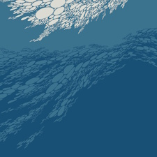

boris - flood
10
nature always wins | 2022.12.13

author's note 2025.05.17: i still stand by my rating, but if i were to re-review this i wouldn't use the same Sendai metaphor. quite interesting to see how much i've changed as a person though!
if you look around for long enough, out there on Wikipedia is a photo of a US Navy helicopter flying through Sendai, following the aftermath of the 2011 Great East Japan Earthquake. look long and hard at it. notice how the water just drowns whole neighborhoods, leaving no seal or crack undrowned, with gravity having no mercy to anyone who just so happened to be beneath the waves. the black and sickened smoke trails signifying that something has gone horribly, horribly wrong. the vantage point painting houses and neighborhoods as tiny, destructible things.
in the same way this photo is a harrowing reminder of our fragility, this album has the same message. the lingering riffs and slow, dreading depth of this album puts you in the shoes of a human who, for the first time, truly realizes the frailty of the life it always knew. the sheer length of this album, the way the first part drones on and on, serves to cement the feeling of scale. it's the feeling of being small, standing right before a gargantuan world larger than any life there is.
undoubtedly however, this album's true highlight is the third part. flood part 3 is the culmination of the dread, anxiety, and listlessness that part 1 and 2 cultivate over the course of 30 minutes. it is the shadow of the waves slowly consuming any light within its way, followed by the waves crashing and decimating the ground beneath, portrayed by a wall of sound that is as awe-inspiring as it is soul crushingly humbling. this wall continues to come crashing down repeatedly over the remaining 11 minutes of the track, with a musical passage that assaults and crushes the listener again, again, again, and again.
by part 4, things have ultimately been submerged, drowned and consumed by the waters in the same way Sendai was, leaving no seal or crack undrowned, and that without mercy. slowly, things die as the album fades out into silence. the sound of helicopters and rescue fill the final 10 minutes of this album.
remember how small we are.
FAV TRACKS: ALL
LEAST FAV TRACKS: N/A